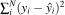
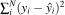
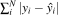
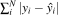
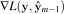
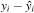
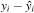
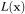

Gradient boosting: frequently asked questions
Terence Parr and Jeremy Howard
Please send comments, suggestions, or fixes to Terence.
We tried to collect a number of common questions on this page. Please note that we focus on gradient boosting for regression not classification. We assume that you've read the main articles associated with this FAQ.
Who invented gradient boosting machines?
Jerome Friedman, in his seminal paper from 1999 (updated in 2001) called Greedy Function Approximation: A Gradient Boosting Machine, introduced the gradient boosting machine, though the idea of boosting itself was not new.
What's the basic idea behind gradient boosting?
Instead of creating a single powerful model, boosting combines multiple simple models into a single composite model. The idea is that, as we introduce more and more simple models, the overall model becomes stronger and stronger. In boosting terminology, the simple models are called weak models or weak learners.
To improve its predictions, gradient boosting looks at the difference between its current approximation,  , and the known correct target vector,
, and the known correct target vector,  , which is called the residual,
, which is called the residual,  . It then trains a weak model that maps feature vector
. It then trains a weak model that maps feature vector  to that residual vector. Adding a residual predicted by a weak model to an existing model's approximation nudges the model towards the correct target. Adding lots of these nudges, improves the overall models approximation.
to that residual vector. Adding a residual predicted by a weak model to an existing model's approximation nudges the model towards the correct target. Adding lots of these nudges, improves the overall models approximation.
Where does the gradient appear in gradient boosting?
Residuals contain direction not just magnitude information and so residuals are vectors. The sign of a residual vector is also a vector. Most articles treat residuals as the error between the approximation and the true target, but we generically call these direction vectors to emphasize the fact that they are vectors, not just magnitudes. Considering the residual as an error vector also makes it awkward to talk about gradient boosting machines that optimize the absolute error, not the squared error.
If a vector is a vector of partial derivatives of some function, then that vector is called a gradient. The residual is the gradient of  loss function  and the sign of the residual,
loss function  and the sign of the residual,  , is the gradient of
, is the gradient of  loss function .
loss function .
By adding in approximations to residuals, gradient boosting machines are chasing gradients, hence, the term gradient boosting.
What is the difference between gradient boosting optimizing squared error versus absolute error?
GBMs that optimize MSE ( loss) and MAE ( loss) both train regression trees,  , on direction vectors, but MSE-optimizing GBMs train trees on residual vectors and MAE GBMs train trees on sign vectors. The goal of training regression tree models is to group similar direction vectors into leaf nodes in both cases. Because they are training on different vectors (residuals versus signs), the trees will group the observations in the training data differently.
, on direction vectors, but MSE-optimizing GBMs train trees on residual vectors and MAE GBMs train trees on sign vectors. The goal of training regression tree models is to group similar direction vectors into leaf nodes in both cases. Because they are training on different vectors (residuals versus signs), the trees will group the observations in the training data differently.
Both MSE and MAE GBM regression tree leaves predict residuals, but MSE GBM leaves predict the average residual given an observation, while MAE GBM leaves predict the median residual.
What is function space?
Function space is just the N space of predictions associated with N observations. Each point in function space, or prediction space as we like to call it, is just the output of calling function  on observation matrix
on observation matrix  .
.
How is gradient boosting performing gradient descent in function space?
First, simplify “function space” to just “prediction space” and then let be our current prediction vector in prediction space. As we nudge towards the true target, we add residual vectors. In the last article in this series, we showed that the residual vector is a gradient vector. Subtracting gradient vectors ala gradient descent is the same as adding the negative of the gradient, which led us to equate the gradient descent position update equation and the gradient boosting model update equation:
| Gradient descent | Gradient boosting |
 |  |
In a nutshell, chasing the direction vector, residual or sign vector, chases the (negative) gradient of a loss function just like gradient descent.
Many articles, including the original by Friedman, describe the partial derivative components of the gradient as:
but, it's easier to think of it as the following gradient:

where the gradient is with respect to  .
.
We train weak models on residuals, y-y_hat, so why don't we need y when using the model on an unknown feature vector?
The  weak models are, indeed, trained on the residuals , but we are training the models to learn a mapping from
weak models are, indeed, trained on the residuals , but we are training the models to learn a mapping from  to . Once we've trained the model, we present the feature vector for an unknown observation, , to get a predicted
to . Once we've trained the model, we present the feature vector for an unknown observation, , to get a predicted  . After training is complete, true targets are no longer needed. Consider the stump from the MSE GBM created in the first article:
. After training is complete, true targets are no longer needed. Consider the stump from the MSE GBM created in the first article:

Notice that the stump tests the x feature vector element value to choose a leaf node. It is the leaf nodes that have the residual values, such as those we computed in the first article:
So, we only need the true target vector during training. After training, weak models test purely feature vector values and make predictions by using an average or median residual (computed during training) stored in one of the leaves. Once the average has been computed, training can delete all of the actual observations since they are never needed again for making predictions.
How is gradient boosting different from our typical usage of gradient descent?
Gradient descent optimization in the machine learning world is typically used to find the parameters associated with a single model that optimizes some loss function, such as the squared error. In other words, we are moving parameter vector around, looking for a minimal value of loss function  that compares the model output for to the intended target. The number of parameters,  , differs from the number of observations, N.
, differs from the number of observations, N.
In contrast, GBMs are meta-models consisting of multiple weak models whose output is added together to get an overall prediction. GBMs shift the current prediction vector of size N, , around hoping to nudge it to the true target, . The gradient descent optimization occurs on the output of the model and not the parameters of the weak models.
Getting a GBM's approximation to is easy mathematically. Just add the residual to the current approximation. Rather than directly adding a residual to the current approximation, however, GBMs add a weak model's approximation of the residual vector to the current approximation. By combining the output of a bunch of noisy models, the hope is to get a model that is much stronger but also one that does not overfit the original data. This approach is similar to what's going on in Random Forests.
Can you point me at a learning resource for gradients and matrix calculus?
Sure, check out The Matrix Calculus You Need For Deep Learning.

![{\small
\begin{tabular}[t]{rrrr}
{\bf sqfeet} & {\bf rent} & $F_0$ & $\vec y-F_0$ \\
\hline
750 & 1160 & 1418 & -258 \\
800 & 1200 & 1418 & -218 \\
850 & 1280 & 1418 & -138 \\
900 & 1450 & 1418 & 32 \\
950 & 2000 & 1418 & 582 \\
\end{tabular}
}](images/latex-178119A7EC2BBFDBFBF57B40CD3589B6.svg)